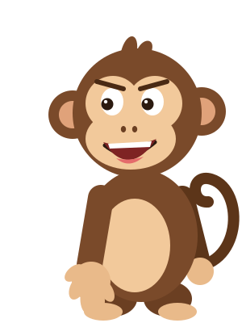

Scroll less, or get slapped.
MonkeySlap is a Chrome extension that gives distracting sites a daily time limit. Go over it, and a monkey swings in and slaps your screen.
7 sites, 5 minutes a day
YouTube, Facebook, TikTok, Instagram, Reddit, X and LinkedIn, ready from the start. Change any limit or switch sites off.
Go over, get slapped
Your first slap comes after just 1 minute so you can see it. Stay anyway, and it comes back harder.
You decide the rest
Add any other site yourself. Chrome asks your permission for that site only.
Private by default
MonkeySlap only measures time on the sites in your list and keeps it on your computer. Signing in with Google is optional and only backs up your settings and history. Read the privacy policy.